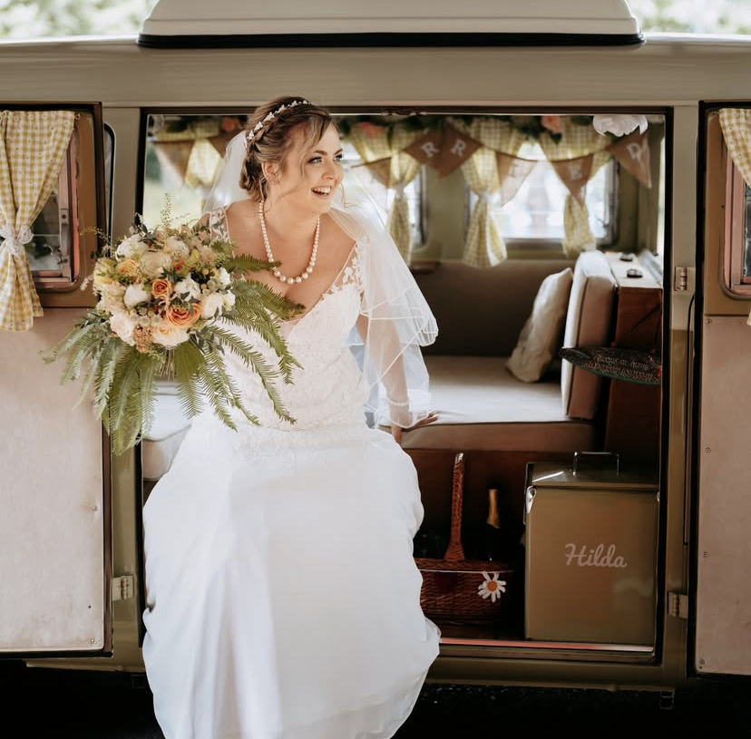

Artisan & Wild
Our Story
At The Litty Florist, we believe that flowers are more than just arrangements—they are a language of emotion. Based in St Ives - Cambridgeshire, our focus is on the "Litty" aesthetic: a blend of high-end luxury and raw, natural beauty.
Every stem is hand-selected, and every bouquet is curated to tell a unique story. Whether it's a grand wedding installation or a bespoke arrangement, we bring an artisan touch to every petal.
Zoe - The Litty Florist